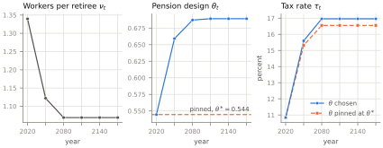
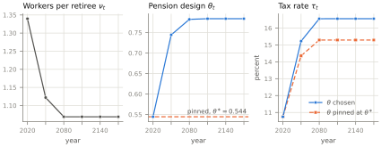

import {pathGrid, control, checkboxes, COUNTRIES, COSTFORMS, countryStyle, OUTCOMES} from "./assets/oa.js"
escPaths = FileAttachment("_generated/data/ESC_Paths.csv").csv({typed: true})
PATHVARS = [["Pension design θ", "theta"], ["Tax rate", "tau"], ["Savings over GDP", "sr"], ["Workweek", "workweek"]]
COSTS = [["the U.S. one for all", "US"], ["each country's own", "own"]]
NAME = ({US: "U.S.", UK: "UK", FR: "France"})
// One country's baseline path at rho = 1 under the selected cost (linear or squared) and parameter (the U.S. one or its own).
countryPath = (country, cost, form) => escPaths.filter(d => (d.source === "main" || d.source === "host")
&& d.country === country && d.spec === "size" && d.rho === 1 && d.wedgeFrom === cost && d.cost === form)
series = (rows, variable, reading) => rows.filter(d => d.variable === variable)
.map(d => ({year: d.year, value: d[reading]})).sort((a, b) => a.year - b.year)
viewof c1Countries = checkboxes(COUNTRIES, {key: "countries", label: "Countries"})
viewof c1Var = control("select", PATHVARS, {key: "variable", label: "Beside workers per retiree", value: "theta"})
viewof c1Form = control("radio", COSTFORMS, {key: "k", label: "Cost of redistribution", value: "linear"})
viewof c1Cost = control("radio", COSTS, {key: "cost", label: "Cost parameter", value: "US"})
{
const lines = v => c1Countries.map(c => {
const st = countryStyle(c);
return {label: NAME[c], colour: st.colour, symbol: st.symbol,
records: series(countryPath(c, c1Cost, c1Form), v, v === "nu" ? "pinned" : "chosen")};
});
const observed = c1Var === "theta" ? c1Countries.map(c => {
const r = countryPath(c, c1Cost, c1Form).find(d => d.variable === "theta" && d.year === 2020);
return r ? {year: 2020, value: r.pinned, colour: countryStyle(c).colour, text: `${NAME[c]}, observed design: ${r.pinned.toFixed(3)}`} : null;
}).filter(d => d) : [];
const items = c1Countries.map(c => ({label: NAME[c], colour: countryStyle(c).colour, shape: "line"}));
if (observed.length) items.push({label: "observed design", colour: "#52514e", shape: "open"});
return pathGrid([{title: "Workers per retiree ν", variable: "nu", lines: lines("nu"), rule: 2020, ruleLabel: "calibration"},
{title: OUTCOMES[c1Var].level, variable: c1Var, lines: lines(c1Var), rule: 2020,
ruleLabel: "calibration", observed}],
items, {width});
}C1. The path in levels
The calibration targets the design of 2020 only; every other design along the path is an outcome of the model, chosen one period ahead. The first two figures follow the three countries from 1990, whose electorate sets the design of 2020, to 2110; the demography is constant from 2080. Each country keeps its own calibration and demography. Its cost parameter is either the U.S. λ, the deep test of C5 along the path, or its own, the parameter at which its electorate re-elects its observed design. Every figure is drawn under both costs of the paper, the linear and the squared cost of section 7.1, each with its own calibration.
By country
In every country the chosen design moves against the number of workers per retiree. As the population ages, the electorate ties benefits more closely to earnings, and the design levels off when the demography does. Under the U.S. cost parameter France’s design lies above the U.S. one until 2050 and by much less from then on, since France’s population is already old in 2020 and ages least afterwards; under the linear cost the two nearly coincide from 2050, France’s just below from 2080. The UK’s design lies above the U.S. one in 1990 and below it from 2050, so that from then on the UK’s is the lowest of the three; in 2020 it is slightly above the U.S. one under the squared cost and below it under the linear cost. The UK’s workers per retiree rise until 2020 before they fall, and its design moves against them, falling and then rising. At their own parameters the UK’s and France’s designs pass through their observed values in 2020 and follow the same patterns. The tax rate rises with ageing everywhere.
\(\cdot\)
Figure C1.1. The baseline path with the design chosen, by country
\(\cdot\)
Note: Log preferences (\(\rho = 1\)), under the cost selected, linear in the tax rate or with the tax rate squared, each calibrated on its own. Each country keeps its own calibration and demography; the cost parameter is the U.S. one or the country’s own, as selected, where one re-elects its observed design. A design chosen at one date applies from the following one. Open markers are the observed designs.
Data: the figure’s data (csv) ·
Source
Reads:
data/USMain_test.xlsxresults/esc/escCalibration.csvresults/esc/escCalibrationCRRA.csvresults/esc/escPath.csvresults/esc/escPathCRRA.csvresults/esc/escPathHost.csvresults/esc/escXiRobustness.csvresults/esc_tau1/escCalibration.csvresults/esc_tau1/escCalibrationCRRA.csvresults/esc_tau1/escPath.csvresults/esc_tau1/escPathCRRA.csvresults/esc_tau1/escPathHost.csvresults/esc_tau1/escXiRobustness.csvresults/paper/usCalibrationSummary.csv
Built by siteData.escPaths (python/paper) at commit 07491fd. Rebuild: python python/paper/build.py --no-copy --only ESC_Paths.
The design chosen and the design pinned
With the design pinned at its observed value, each country’s path is that of section 6 with the cost in place. After 2020 the tax rate with the design chosen lies above the pinned path in every country, under either cost and either parameter, consistent with the hump of C2: at a given demography the tax rate peaks just above the design the electorate chooses, so a design pinned well away from that choice carries a lower one. At each country’s own parameter, the U.S. included, the chosen design rises above the observed one after 2020 as the population ages, and the tax rate lies above the pinned path by less under the linear cost than under the squared: in the U.S. by up to about four tenths of a percentage point against about one and a quarter, in the UK by up to a fifth of a point against three fifths, and in France by a few hundredths against a tenth. Under the U.S. parameter the UK’s chosen design lies above its observed one throughout, and France’s below it, until 2020 under the squared cost and throughout under the linear cost; the gap in the tax rate is largest in the UK.
\(\cdot\)
Figure C1.2. The baseline path with the design chosen and with it pinned
\(\cdot\)
Note: Log preferences (\(\rho = 1\)), under the cost selected. Pinned holds the design at the country’s observed value throughout, under the same cost.
Data: the figure’s data (csv) ·
Source
Reads:
data/USMain_test.xlsxresults/esc/escCalibration.csvresults/esc/escCalibrationCRRA.csvresults/esc/escPath.csvresults/esc/escPathCRRA.csvresults/esc/escPathHost.csvresults/esc/escXiRobustness.csvresults/esc_tau1/escCalibration.csvresults/esc_tau1/escCalibrationCRRA.csvresults/esc_tau1/escPath.csvresults/esc_tau1/escPathCRRA.csvresults/esc_tau1/escPathHost.csvresults/esc_tau1/escXiRobustness.csvresults/paper/usCalibrationSummary.csv
Built by siteData.escPaths (python/paper) at commit 07491fd. Rebuild: python python/paper/build.py --no-copy --only ESC_Paths.
The U.S. path from the calibration year
The figure follows the U.S. from 2020, the calibration year, along its projected demography under log preferences, with the design chosen and with it pinned at its observed value: the U.S. path of the figures above, drawn beyond 2110. Since the calibration targets only the design of 2020, the path after 2020 is a prediction. The chosen design rises as the number of workers per retiree falls, most between 2020 and 2050, and settles one period after the demography does, lower under the linear cost than under the squared. The tax rate climbs with ageing and lies above the path with the design pinned from 2050 on, by less than half a percentage point under the linear cost and by about a point under the squared, since a more earnings-related system loses less of its revenue. C3 shows the path at the other values of the IES.
\(\cdot\)
Figure C1.3. The design and the tax along the U.S. baseline path, the linear cost

Note: The paths start in 2020, the calibration year, under log preferences (\(\rho = 1\)) and the cost linear in the tax rate, equation (17) of the paper, with the design chosen and with it pinned at its observed value; a design chosen at one date applies from the following one.
Data: escCalibration.csv · escCalibrationCRRA.csv · escPath.csv ·
Source
Reads:
data/USMain_test.xlsxresults/esc_tau1/escCalibration.csvresults/esc_tau1/escCalibrationCRRA.csvresults/esc_tau1/escPath.csv
Built by figuresOA.escPathPaper (python/paper) at commit 07491fd. Rebuild: python python/paper/build.py --no-copy --only US_ESC_Path_linear.
\(\cdot\)
Figure C1.4. The design and the tax along the U.S. baseline path, the squared cost

Note: The paths start in 2020, the calibration year, under log preferences (\(\rho = 1\)) and the cost with the tax rate squared, equation (17) of the paper with \(k = 2\), with the design chosen and with it pinned at its observed value; a design chosen at one date applies from the following one.
Data: escCalibration.csv · escCalibrationCRRA.csv · escPath.csv ·
Source
Reads:
data/USMain_test.xlsxresults/esc/escCalibration.csvresults/esc/escCalibrationCRRA.csvresults/esc/escPath.csv
Built by figuresOA.escPathPaper (python/paper) at commit 07491fd. Rebuild: python python/paper/build.py --no-copy --only US_ESC_Path.